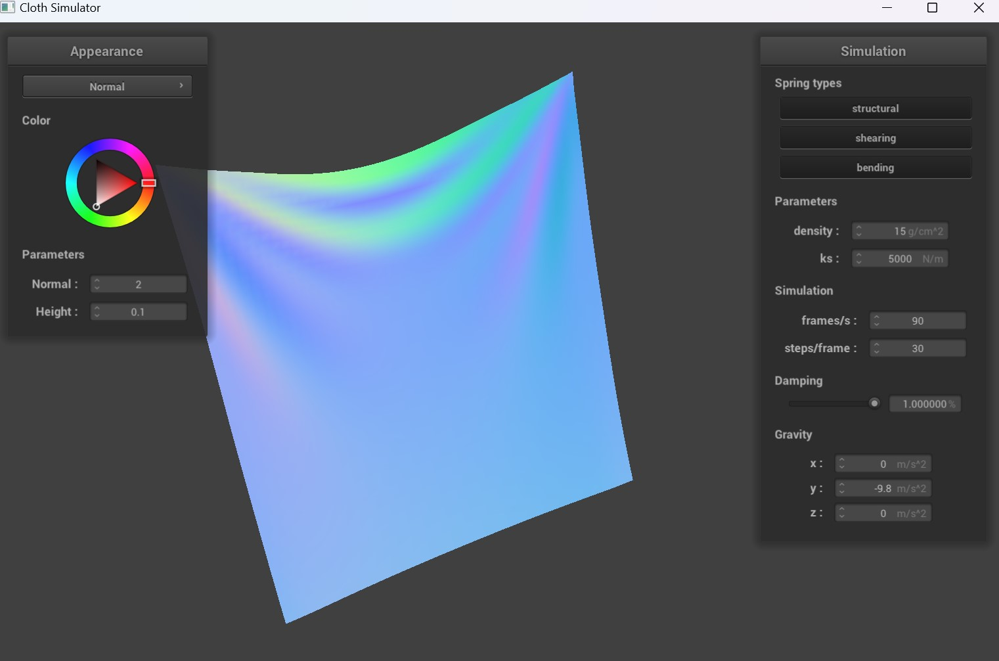
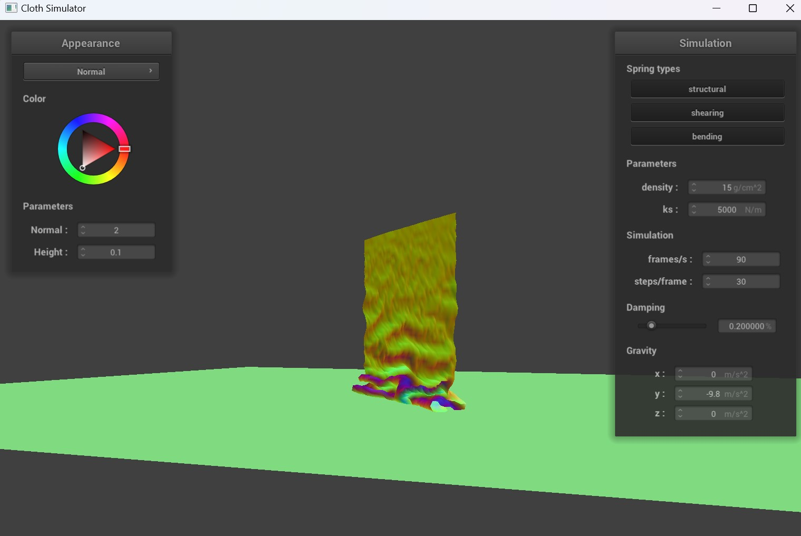
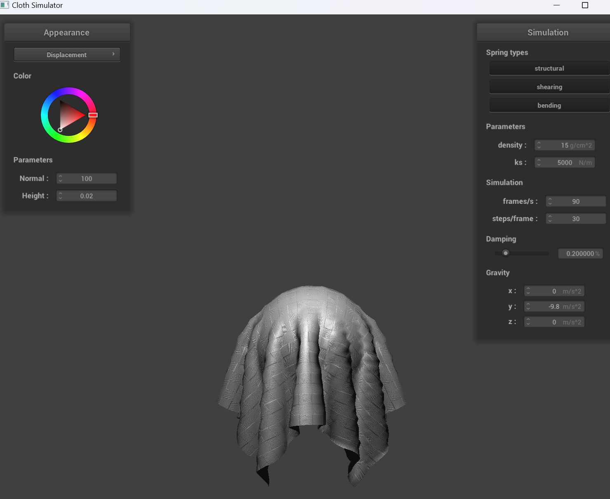

In this project, we explored how to create cloth model simulation using a mass and spring based system. Building the cloth model using a grid of masses and springs, we looked at how to simulate motion via numerical integration, collisions between the cloth and a sphere and plane, collisions between the cloth and itself, and developing a variety of shaders to add texture and material to the cloth model.
We approached this by following the formulas given in the spec and discussed in lecture slides, working part by part to develop each section and build from the bottom up. This was a fascinating project to work on, as it reminded me a lot of a recent TikTok trend showcasing cloth falling on different objects with an increasing number of planes. It was really fun to be able to recreate this trend by looking at how the cloth could be simulated simply through vectors.
Part 1: Masses and springs
scene/pinned2.json cloth wireframe
No shearing
Only shearing constraints
All constraints
Part 2: Simulation via numerical integration
Spring Constant
With a very low ks, there are a lot of continuing ripples throughout the fabric as it drops. As such, the fabric feels much lighter and has less weight to the drop. At a very high ks, there are less ripples moving through the cloth after it drops. The fabric feels stronger, and finishes movement faster, with less residual movement.
High ks = 50000 N/m
Default ks = 5000 N/m
Low ks = 5 N/m
Density
Density gives weight to the cloth. With greater density, the cloth drops faster and has a greater weight to the way it drops. For example, at lower density the cloth bounces back up slightly whereas it falls to resting state at higher density.
Low density = 1 g/cm^2
Default density = 15 g/cm^2
High density = 50 g/cm^2
Damping
At 0% damping, the cloth swings wildly back and forth nonstop, with many ripples moving through the fabric as if it was being blown by the wind, only held in place by the wind. On the other hand, at very high damping the fabric drops incredibly slowly and feels very stiff.
Low Damping = 0%
Default Damping = 0.2%

High Damping = 100%
Shaded cloth in final resting state.
Part 3: Handling collisions with other objects
For the sphere collide method, we handle collisions by first checking if the Pointmass lies within the sphere. To do this, we calculate the direction and distance of the vector from the position of the Pointmass to the origin of the sphere. If the distance is less than the radius, the point is within the sphere. For points within the sphere, we calculate the point at which the point mass intersects the sphere (tangent point). We then set the position of the point mass to a corrected position by adding the difference between the tangent point and the point mass’s last position, scaled by (1 - friction), to the last position. This will correct the position to be just outside the sphere.
For the plane collision, we compute the signed distance from the plane to the point mass’s current and last positions using the dot product with the plane’s normal. If the signs are different between the two calculations, then we know that the point mass has crossed the plane. We then calculate the tangent point by doing linear interpolation. We then use the tangent point and a small SURFACE_OFFSET to calculate the correction vector. We then scale this by (1 - friction) then add it to last_position.
ks = 5000. Increaing the spring constant caused less folds to form.
ks = 500. The low spring constant makes the cloth to be softer and better adhere to the sphere's shape. As a result, there are more folds.
ks = 50000. A large spring constant causes the fabric to look stiff. There are few folds in the fabric and the folds are much larger. The fabric also starts to fall off the sphere because of the stiffness.
Cloth lying on plane.
Part 4: Handling self-collisions
First, we create a hash for a unique float identifier based on the position using the recommended 3D partitioning and truncating it to find the closest 3D coordinates. We then made it into a hash using 2 different magic numbers.
After getting the hash_position function that identifies the hash based on position, we looped over all point masses to populate the spatial map.
We then implemented self_collide by finding the distance between each pair of point mass and a candidate point mass, determine if that is within 2*thickness distance apart, and find an averaged vector of all the correction vectors that make it 2*thickness distance apart. We finally scale the correction vector by simulation_steps, and add it to the point mass’ position.
We then ensure to iterate through every point mass and run self_collide to check for any collisions.
Early, initial self-collision

Middle of collision
Final rest state
Low Density = 1 g/cm^2. The fabric falls down with a lot less visual force, forming large folds that slowly move downwards. The folds created in the fabric are fairly loose.
High Density = 100 g/cm^2. With high density, the cloth falls down with a lot more visual force and is a lot more compressed. The folds are a lot smaller than with low density, does not spread out as much, and are more compact.
Low ks. With low KS, the cloth appears super soft and light, folding in on itself incredibly easily and collapsing. There are a lot more folds than with the default KS value, and stack on top of each other.
High ks. On the other hand, with high KS the cloth does not fold nearly as easily. It appears to have a lot more stiffness in the way it folds in on itself, causing the folds to be a lot larger than with low KS.
Part 5: Shaders
A shader program helps render colour, lighting, textures, materials, and other visual elements to objects. Vertex shaders and fragment shaders work together by creating the world via vertex shaders and developing lighting and texture through different pixel shades via fragment shaders.
Blinn-Phong shading model works by modeling how ambient, diffuse, and specular light interact with surfaces. This helps simulate indirect lighting, direct lighting, and highlights.
Ambient
Diffuse
Specular
Entire Model
Custom texture
Bump Mapping
Bump Mapping
Displacement Mapping

They are both similar in the sense that they create textures for both the cloth and the sphere. However, for bump mapping, we are faking the bumps by modifying the normals whereas for displacement, we are actually modifying the vertices. This can be most clearly seen at the top of the sphere where the cloth is covering. For bump, it is smooth, while for displacement, it is not a smooth curve.
Bump Mapping -o 16 -a 16
Displacement Mapping -o 16 -a 16
Bump Mapping -o 128 -a 128
Displacement Mapping -o 128 -a 128
As o and a both increase, the clarity of the impact of the texture on the image becomes more obvious for displacement mapping. There is not as much of an impact for o and a on bump mapping, however.